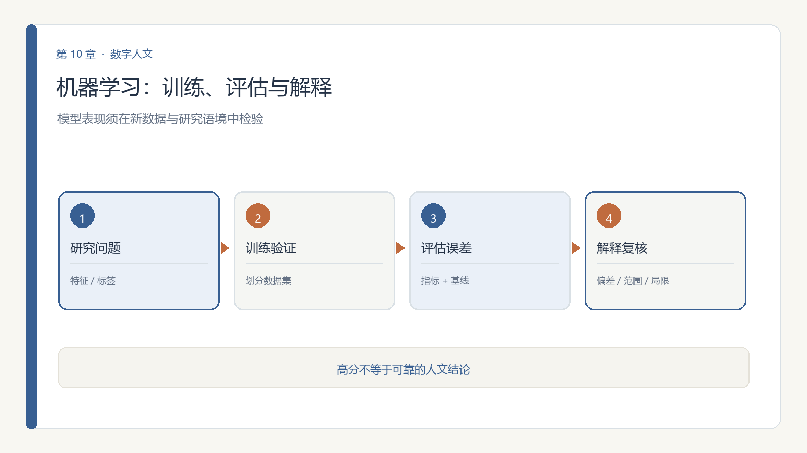

第 10 章 模块十 机器学习与深度学习基础
学习目标：完成本模块后，你应能（1）区分监督学习与无监督学习；（2）解释训练/验证/测试与过拟合；（3）用混淆矩阵等指标（而非仅准确率）评估一个模型；（4）指出训练数据偏见会怎样被模型继承与放大。

10.6 伦理坐标：从历史数据学的"历史偏见"（本模块核心能力）
- 训练数据偏见：模型学的是"过去的数据"，过去的歧视会被继承（如某类文献被系统性低估）；
- 代理歧视：用" proxies"（如地名替代族群）绕开敏感字段，反而隐蔽地偏见；
- 自证循环：用模型给史料打标签，再把标签当"事实"喂回训练，偏见固化。
一条红线：不把模型输出当"客观真相"；报告必须交代训练数据来源、规模与已知偏差。
10.11 思政融入（课程思政）
思政融入（课程思政）：算法若有偏见，会悄然加剧现实中的不平等。作为人文研究者，你有责任让模型向善、向公——在训练与评估中主动纠偏，不让技术放大歧视。科技是手段，人的尊严与社会公平才是目的；这既是伦理，也是价值立场。
思政案例（课程思政示范案例 / AI 思政课 知识库）：可参照高职教师人工智能伦理研究（韩燕霞，基于 5 个国际文件）提出的“透明度、公平性、隐私保护”三维度——让模型向善、向公。
第二部分 课程内容
理论10.1 为什么人文也要懂一点模型
前面的模块在"描述"数据，机器学习开始"预测与归类"：判一封书信真伪、聚出未知流派、给器物断代。不懂模型，就会被"AI 说它是真的"唬住。这一模块给你能质疑模型的底气。
理论10.2 监督学习：特征、标签与训练
监督学习用"带答案的例题"训练：给模型一堆"特征→标签"（如 文本向量→朝代），它学会对新样本打标签。分两类：分类（归到某类）与回归（预测一个数值）。本模块 V2.1 的 Fundamental Models in Machine Learning and Deep Learning 是系统入门。
理论10.3 无监督学习：聚类与降维
无监督没有"答案"，让模型自己找结构：聚类把相似样本归团（如未见过的诗文流派），降维把高维特征压成 2 维好画图。它适合"我还不知道该问什么"的探索阶段。
理论10.4 评估：准确率之外
- 过拟合：模型把训练集"背下来"，换新数据就垮——所以必须分训练/验证/测试；
- 混淆矩阵：看"把 A 判成 B"错在哪，比单一准确率信息量大；
- 基线：模型总要比"瞎猜"或"全判最多类"强才有用。
10.5 可解释性：SHAP 与注意力
黑箱模型不能直接当人文结论。可解释方法让模型"自证"：SHAP 说清"哪个特征促使这个判断"，注意力机制显示"模型盯住了哪几个字"。能向历史学者说清"为什么"，模型才可用（见本模块 V2.1 的 Explaining Artificial Intelligence, Machine Learning, and Deep Learning Models）。
理论10.7 第一次动手：对文本做聚类并解释
小练习 10.1（机器学习）：取模块四得到的文档向量（或任意文本嵌入），用 K-Means 聚类成若干组，看每组是否对应某个隐含主题；再用可解释方法（或人工抽样）判断"模型凭什么这么聚"，并指出哪一组可能因数据偏见而失真。本模块 V2.1 的 Applications of Machine Learning and Deep Learning in Genomics and Proteomics 虽在生命科学，其"评估与可解释"思路可迁移到人文。
10.8 第二次动手：用 SHAP 解释一个文本分类
- 目标：在 10.7 聚类基础上，改做有标签分类，并解释“模型靠什么判断”。
- 步骤：
- 取带标签文本（如两类主题）；
- 训练一个简单分类器；
- 用 SHAP 取 Top 特征词；
- 检查特征是否符合直觉；
- 写 150 字：可解释性为何关乎公平。
- 工具：sklearn + shap。
- 产出：SHAP 特征图 + 解读。
- 评价量规：分类正确（30%）、SHAP 正确（30%）、公平讨论（40%）。
10.10 思考题
- 如果你用机器学习给古诗"判作者"，训练数据偏向名家，结论会怎样偏？如何察觉？
- 为什么"准确率 95%"仍可能是一个糟糕的模型？举一个场景。
- 可解释性对人文研究为何特别重要？不可解释的模型能进入你的结题报告吗？
10.12 讨论：方法迭代与科研岗位的重塑
学完机器学习，值得抬头看看这门技术正在怎样改变"做研究"这件事本身。
方法的迭代在加速。 以文本分析为例，主流方法栈十年内换了两代：词频统计 → TF-IDF 与主题模型（LDA）→ 预训练嵌入与 BERTopic → 大语言模型直接抽取与智能体流水线。这告诉你两件事：具体工具的"保质期"在缩短，今天热门的库三年后可能无人问津；但"提出好问题 + 判断数据是否可信"的能力在升值——它不随框架更替而失效。
岗位的冲击已经发生。 《自然》网站 2026 年 2 月刊载的一项研究调查了 40 余位学界与业界 AI 使用者，多数受访者坦言：AI 已显著降低对"编写代码、处理基础数据"人员的需求——这类工作以往多由研究生、博士后承担；计算机建模等初级岗位同样承压；连科学论文翻译这类周边工作也在萎缩（美国翻译协会科学与技术部门会员数在不到两年半内减少约 26%）。
更值得警惕的是"新岗位不再诞生"。 有计算生物学家感慨：若五年前组建实验室，聘请研究程序员是题中应有之义，如今 AI 足以胜任繁重的编码工作，此举或再无必要。这引出一条隐藏风险——人才梯队的断裂：这些初级岗位本是通往更高科学职位的阶梯，若新人失去"练级"机会，短期看是"以更低成本获得更多产出"，长期看却是后继无人。
招聘标准也在改。 有研究者表示，如今招博士后不再看重"是否会写基础代码"，而看重两件事：驾驭 AI 的工具能力，与面对技术变革的开放心态；她更倾向于寻找智能体的"训练家"。
对你的意义：需要动手操作的实验岗、统筹项目的资深科学家目前仍在"安全区"，但自动化实验系统正在追赶。真正稳固的位置，属于既懂一个领域、又能审计数据与驾驭模型的复合型人才——这正是这门课想把你送去的地方。
第三部分 拓展练习
下表为通过 OpenAlex（开放学术图谱，聚合期刊/会议/预印本）、DBLP（CS 会议期刊，含 SIGIR/UIST/DH/IJDAR/EPIA）、arXiv（预印本）、CrossRef（期刊 DOI 元数据）、CORE（开放获取库）检索到的真实文献，按来源/被引排序，供延伸阅读与实验报告引用。
| 来源 | 年份 | 标题（链接） | 作者 / 场所 |
|---|---|---|---|
| CrossRef | 2019 | Deep Learning | Machine Learning and its Applications（被引 25） |
| CrossRef | 2021 | Fundamental Models in Machine Learning and Deep Learning | Design of Intelligent Applications Using Machine Learning and Deep Learning Techniques（被引 8） |
| CrossRef | 2022 | Explaining Artificial Intelligence, Machine Learning, and Deep Learning Models | Risk Modeling（被引 1） |
| CrossRef | 2020 | Machine Learning Paradigms: Introduction to Deep Learning-Based Technological Applications | Learning and Analytics in Intelligent Systems（被引 1） |
| CrossRef | 2023 | Applications of Machine Learning and Deep Learning in Genomics and Proteomics | Applications of Machine Learning and Deep Learning on Biological Data |
| CrossRef | 2019 | 2019 International Conference on Deep Learning and Machine Learning in Emerging Applications (Deep-ML) | |
| CrossRef | 2023 | Other Models of Deep Learning and Applications of Deep Learning | Machine Learning |
| CrossRef | 2023 | Machine Learning Optimization Applications | Swarm Intelligence and Evolutionary Computation |
课堂复现（检索即方法）：下列代码直接调用 OpenAlex 免费 API 复现本模块文献检索（无需密钥）。
import urllib.request, urllib.parse, json
q = 'data science digital humanities'
url = 'https://api.openalex.org/works?search=' + urllib.parse.quote(q) + '&per_page=10&sort=cited_by_count:desc'
oa = json.loads(urllib.request.urlopen(url, timeout=30).read())
for w in oa['results']:
print(w['publication_year'], w['title'], '->', (w.get('primary_location') or {}).get('source', {}).get('display_name'))误用警示：① arXiv 预印本未经同行评审，引用须标 preprint 并追正式版；② 被引数代表影响力非结论正确；③ 商业库（WoS/Scopus/Elsevier/JSTOR/CNKI）本环境无订阅，需机构账号获取后再并入。
与实验衔接：将任一方法对照本模块实验改写数据集或提示词，即可形成有学术依据的结题报告。
第四部分 本章小结
小结10.9 本章小结
带走三件事：监督 vs 无监督（有无标签）、评估四件套（训练/验证/测试、混淆矩阵、基线、过拟合）、可解释 + 偏见自觉。模型是放大镜，不是判官。
本章配套游戏：模型审判